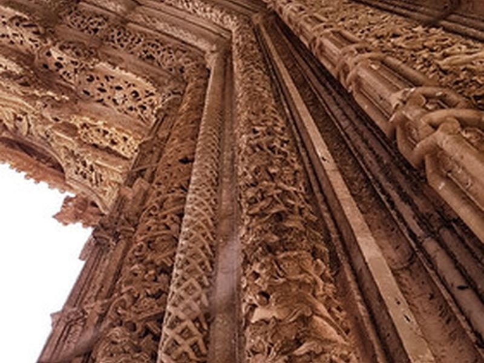
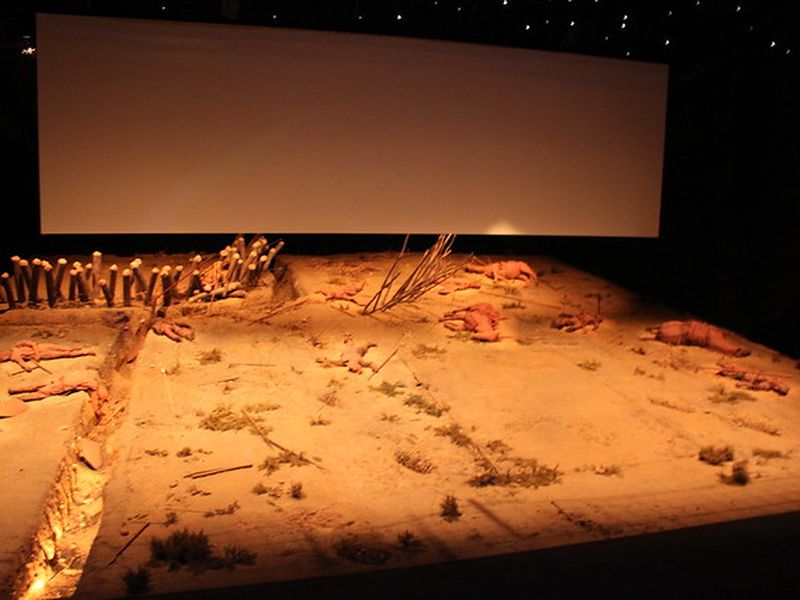
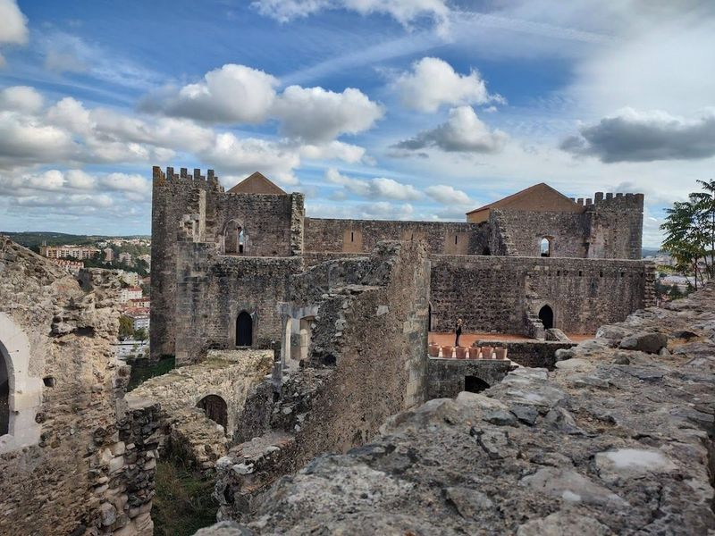
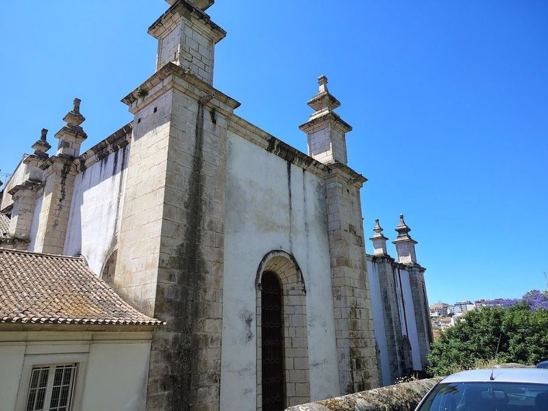
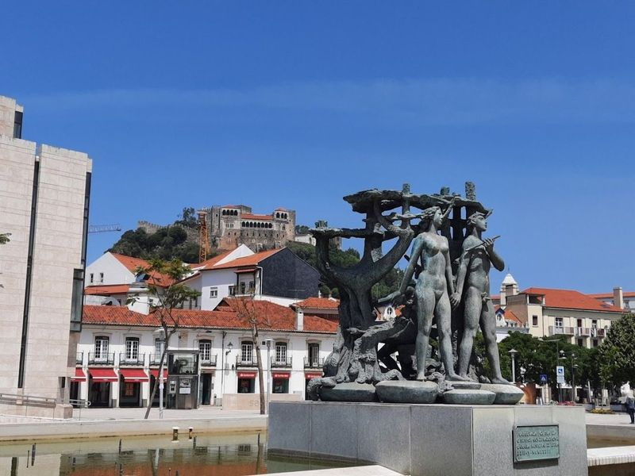
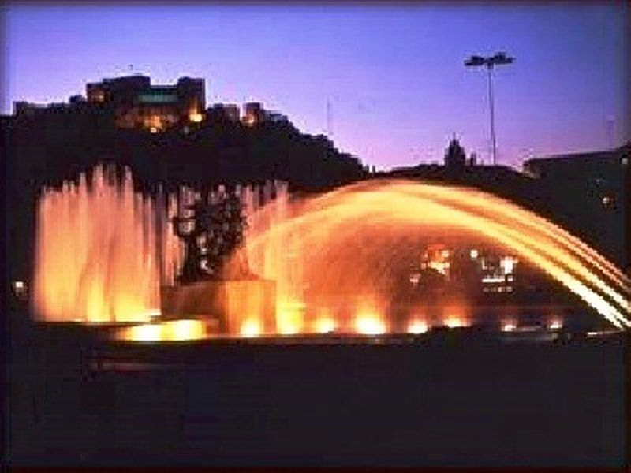
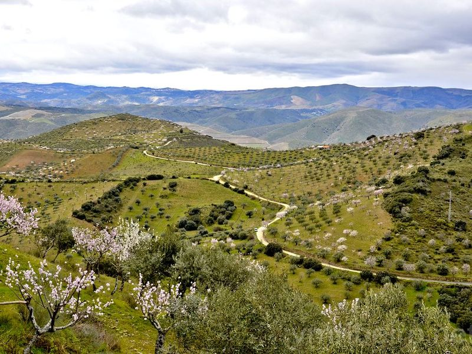
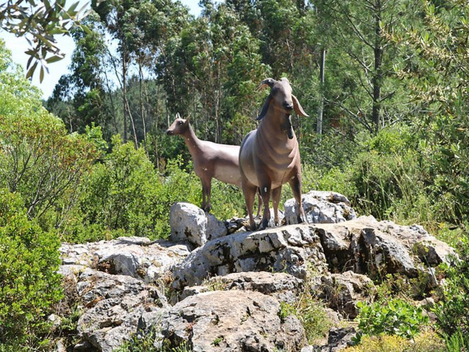

Explore Batalha
A Brief History
Batalha owes its fame to the Dominican monastery King João I vowed to build after the 1385 victory at Aljubarrota secured Portuguese independence from Castile. Royal tombs, Founder's Chapel, and the unfinished Capelas Imperfeitas display Flamboyant Gothic and Manueline carving paid for by pepper profits from Africa and Asia. The small town that grew beside the abbey remained tied to court ceremony, craft guilds, and later agricultural life on the Estremadura plateau.
Attractions Map
Top Sights & Activities

Batalha Monastery
A UNESCO World Heritage site, this Gothic monastery is a masterpiece of medieval architecture and a symbol of Portuguese independence. The site is catalogued as a tourist attraction. Batalha Monastery is listed among principal sites for Batalha within Portugal.

Centro de Interpretação da Batalha de Aljubarrota
An interactive museum dedicated to the Battle of Aljubarrota, offering historical insights through exhibits and multimedia. The site is catalogued as a tourist attraction. Centro de Interpretação da Batalha de Aljubarrota is listed among principal sites for Batalha within Portugal.

Source of the River Lis
A serene spot where travellers can see the origins of the River Lis, surrounded by picturesque nature. The site is catalogued as a tourist attraction. Source of the River Lis is listed among principal sites for Batalha within Portugal. Municipal and regional heritage listings document its place in the historic centre and travellers routes through Batalha.

Castelo de Leiria
Nestled atop a cliff, the Castelo de Leiria is a medieval fortress that offers travellers an enchanting glimpse into Portugal's rich history. This remarkable site features beautiful gardens and the remnants of a Gothic church, all while providing panoramic views of the city below.

Our Lady of the Immaculate Conception Cathedral, Leiria
Our Lady of the Immaculate Conception Cathedral, located in Leiria, Portugal, is a example of Joanine architecture from the 16th century. This cathedral shares its design with two other cathedrals in Portugal and is considered a hallmark of late Renaissance inspiration. The Mannerist-style building has undergone several changes over the years due to natural disasters and historical events.

Jardim Luís de Camões
Jardim Luís de Camões is a charming urban park located in the town center, offering amenities such as drinking fountains, well-maintained restrooms, and an array of inviting bars and cafes. travellers can also benefit from the presence of an informative tourist office and seasonal attractions. The park is renowned for hosting a captivating medieval festival during certain times of the year, making it an ideal spot to immerse oneself in local culture.

Fonte Luminosa
A illuminated fountain that becomes a sight, especially at night. The site is catalogued as a tourist attraction. Fonte Luminosa is listed among principal sites for Batalha within Portugal. Municipal and regional heritage listings document its place in the historic centre and travellers routes through Batalha.

Jardim Almoínha Grande
The site is catalogued as a zoo. Jardim Almoínha Grande is listed among principal sites for Batalha within Portugal. Municipal and regional heritage listings document its place in the historic centre and travellers routes through Batalha. The site is catalogued as a zoo.

Rota do Vale do Lapedo
The site is catalogued as a tourist attraction. Rota do Vale do Lapedo is listed among principal sites for Batalha within Portugal. Municipal and regional heritage listings document its place in the historic centre and travellers routes through Batalha.

Pia do Urso
The site is catalogued as a tourist attraction. Pia do Urso is listed among principal sites for Batalha within Portugal. Municipal and regional heritage listings document its place in the historic centre and travellers routes through Batalha. The site is catalogued as a tourist attraction.